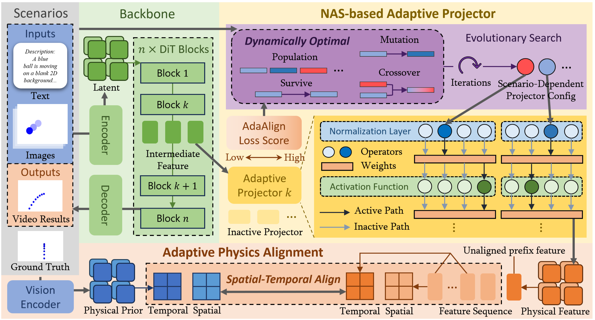
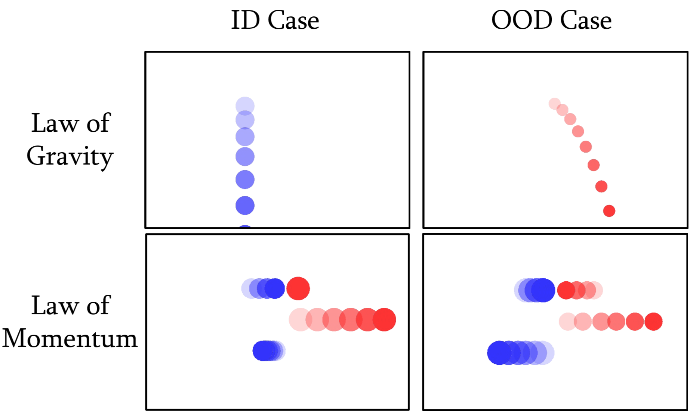

Learning Invariant Physical Laws via Adaptive Architecture Alignment for Out-of-Distribution Conditioned Video Generalization across Diverse Environments
Abstract
Recent advances in video generation aim to produce physically realistic content. However, existing methods often fail to generalize in Out-of-Distribution (OOD) scenes where physical environments shift. Motivated by this, we formally define a novel task for the OOD generalization of physical laws in video generation, necessitating models to learn invariant physical laws from specific environments, thereby maintaining generalization as environmental conditions shift. Current approaches struggle with this task due to their inability to internalize fundamental physical laws from high-dimensional visual data and their lack of dynamic adaptability across diverse environments and conditions. To address this, we propose a novel framework, Physics-AdaNet. Specifically, our approach employs a temporal masking alignment strategy to bridge the gap between latent representations and physical priors, fostering structural physical understanding rather than relying on statistical patterns. Meanwhile, to accommodate diverse physical environments, we incorporate Neural Architecture Search (NAS) to adaptively tune the model across various tasks, further enhancing generalization capacity. Extensive experiments demonstrate that Physics-AdaNet consistently outperforms existing baselines in both physical accuracy and visual fidelity, particularly in OOD settings.

Overview of Physics-AdaNet. Our framework primarily consists of: (a) Adaptive Physics Alignment, which enforces physical consistency by aligning the intermediate features of backbone with extracted physical priors from ground truth across both spatiotemporal dimensions to enhance OOD generalization; and (b) NAS-based Adaptive Projector, which employs an evolutionary algorithm to dynamically identify the scenario-dependent optimal projector configuration for specific scenarios.
